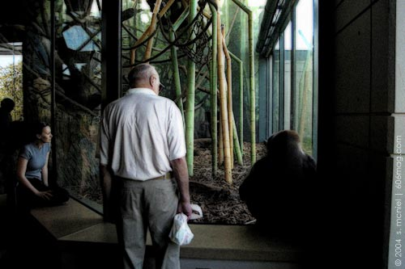

 |
The world teaches many harsh lessons, perhaps the most important of which is that life is simply not fair. The Lincoln Park Zoo has recently taken some initiative to ensure the practice of confining animals is at least a bit more modern and interesting. Among renovations to the ape house is an interactive device that allows chimpanzees to shoot bursts of air onto visitors. The idea is that the chimps can now respond to people who pound on the glass wall of their enclosure. Sure, if given the chance, they would probably communicate a lot more than a harmless shot of air to the public. Letting apes loose upon Lincoln Park is obviously not an option, but the zoo is apparently willing to compromise: While the animals may be restricted to the ape house, they did get a remodeling and the installation of interactive equipment. It may not be revolutionary, but it's certainly an improvement. In fact, their new habitat cost $26 million. When you consider the amount of money that is allocated for public housing in Chicago , the apes really aren't getting a raw deal. Zoo officials also hope that such interactive devices will demonstrate that apes are quite intelligent and exhibit behavior similar to humans. Certainly, this is a lesson well learned for the many children who attend the zoo, as these behavioral similarities are later reconfirmed while attending frat parties and bars like John Barleycorn, but perhaps this will create a feeling that we're not so different after all and ultimately cultivate a greater appreciation for apes. I went to the zoo expecting to see pissed-off, confined chimps in action, emitting bursts of air on an unsuspecting public. But alas, I was wrong. Kids were pounding on the glass, but they were not subject to any retribution from the chimps. I needed further answers and fast, for standing in an ape house on a hot day surrounded by hordes of children is certainly not my preferred way to spend a Saturday afternoon. What I needed was a zoologist. I scanned the crowd and finally spotted a woman fully dressed in khaki safari wear. I had found my zoologist. Her name was Kathy, and she informed me that she had never even personally witnessed any of the chimps press the button. Apparently, the chimps are still ignorant of the fact that pressing it will release the burst of air and, thus, they don't press it. The hope in creating the system is that the chimps will make the Pavlovian link and associate people's negative reactions, such as making faces on the glass, to the pressing of the button. Kathy added that chimps are very intelligent, but, shrugging her shoulders and smiling, she added, “They may never get it.” Unsatisfied with her answer, I prodded further. Why might they never get it? What I wanted her to say was, “Well, because they are kept in a glass cage, hindering their ability to fully realize the concept,” she instead replied, “they just may never make the association.” I was getting the runaround from Kathy and we had obviously hit a dead end. Elsewhere, I read that “Zoo officials hope the exhibit's realistic environments will give visitors new respect for apes and allow scientists to observe the apes acting as they would in the wild.” Of course, because Lincoln Park might as well be Africa, they're so similar. And the trees in Africa contain human installed electrical devices to facilitate interaction between confined animals and humans. The main problem is that every attempt to make their zoo habitat more like their natural one produces the very opposite of the intended effect: It makes the environment less realistic by making it even more constructed. Such devices are deemed necessary to solve the initial problem of how the zoo habitat is inauthentic. However, something cannot be made more authentic by manipulating it to a greater degree. |